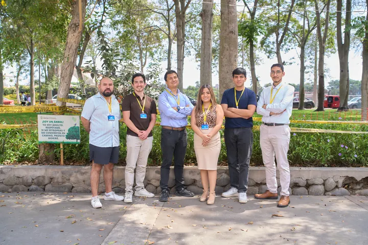
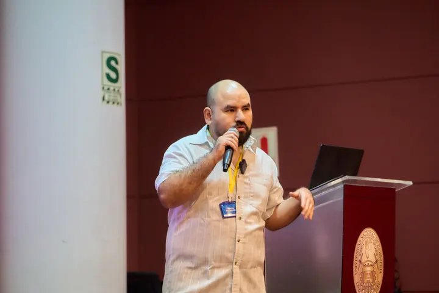
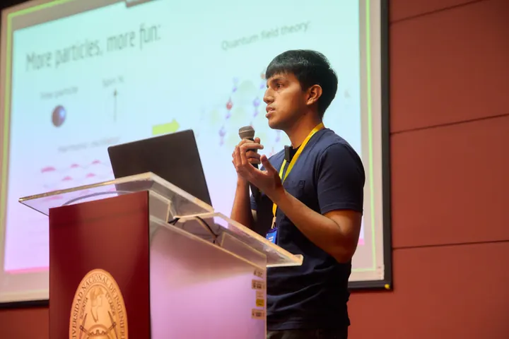
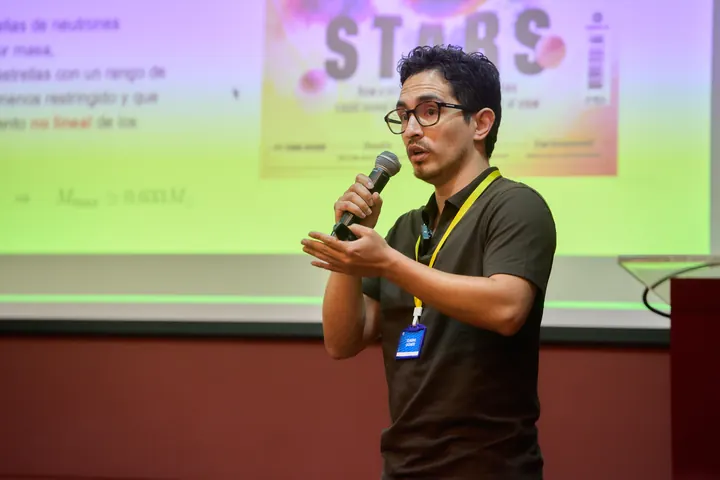
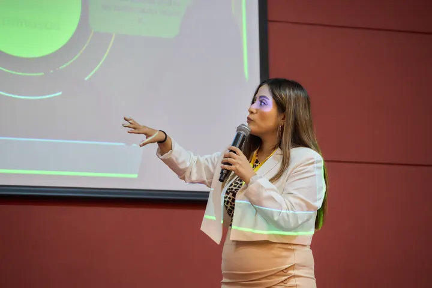
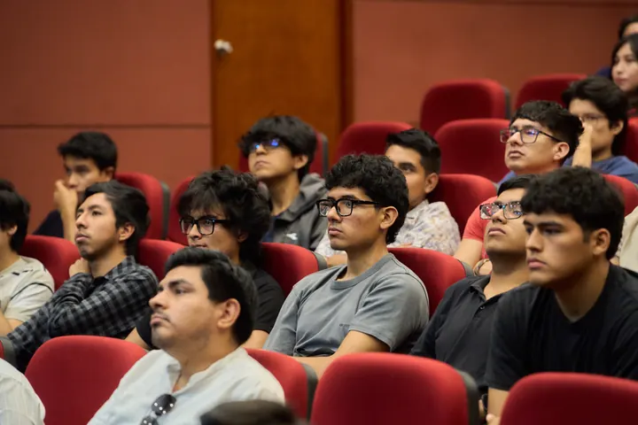
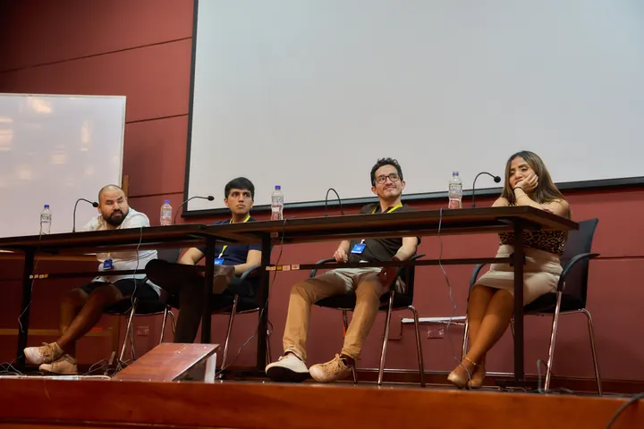
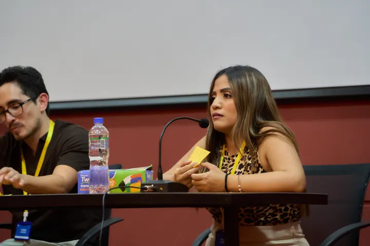
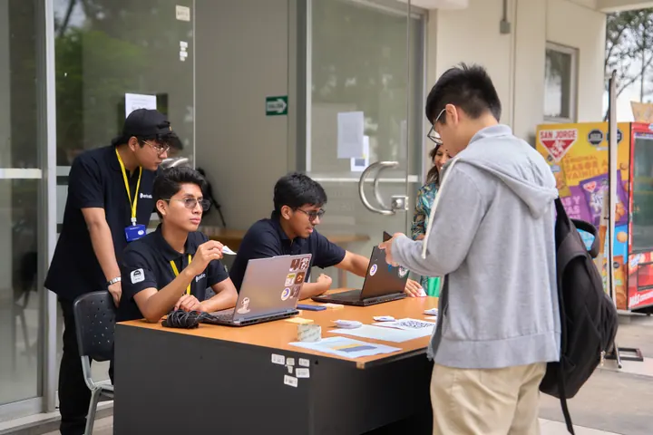

La comunidad en imágenes / Archivo
ENTRE FÍSICOS
2026.
8–9 de enero de 2026
Exposiciones, preguntas y momentos compartidos con nuestra comunidad.
Abre cada fotografía para verla completa y recorre la galería.
Fotografías de Entre Físicos 2026

















